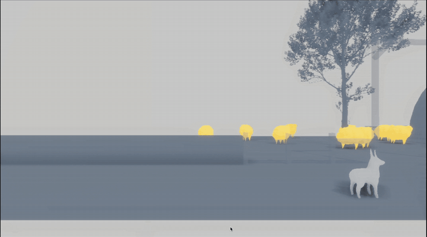
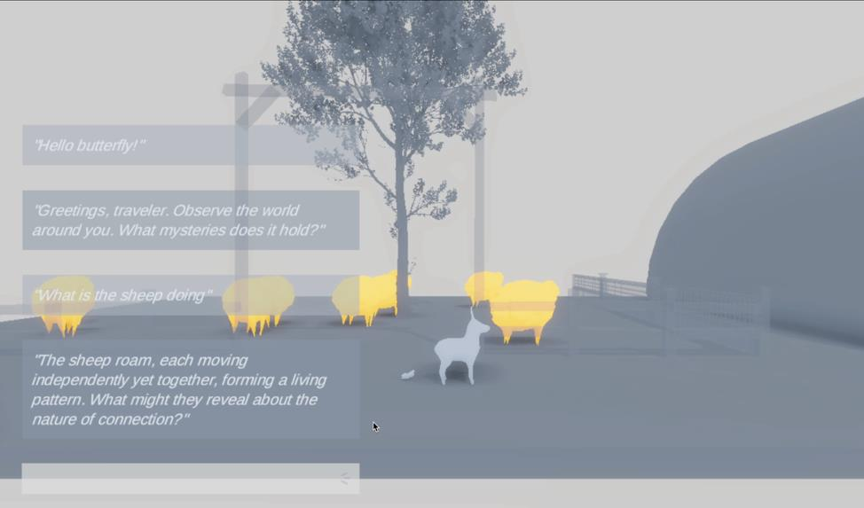
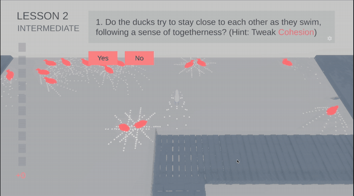
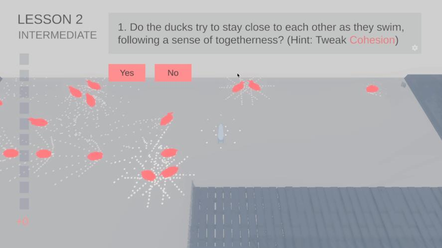
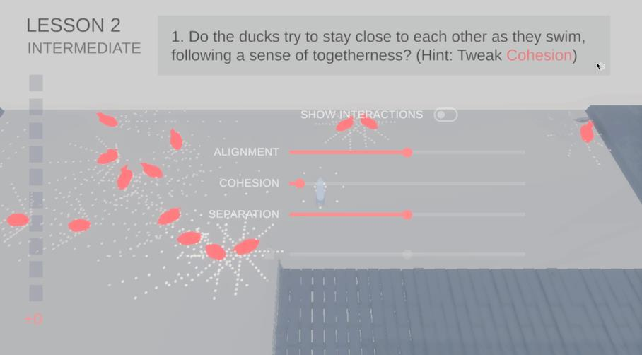
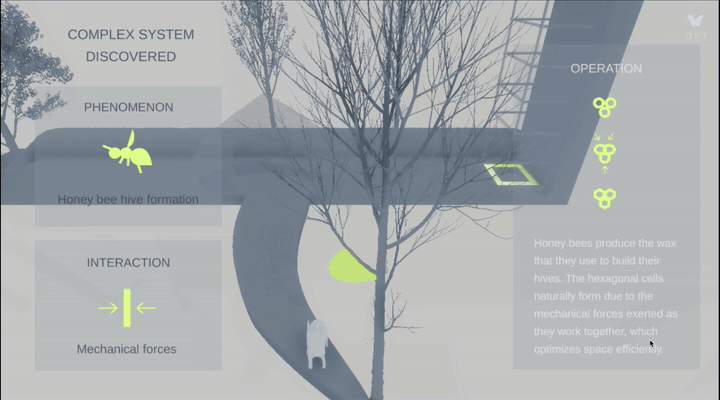
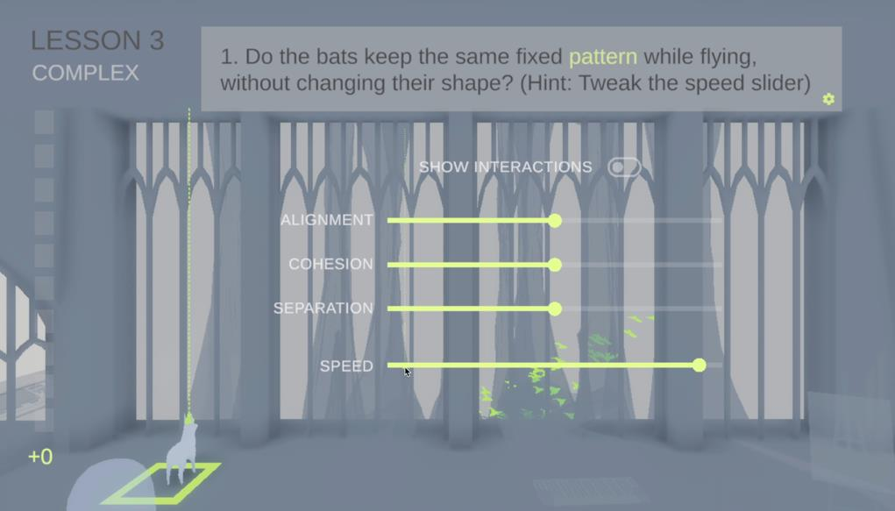
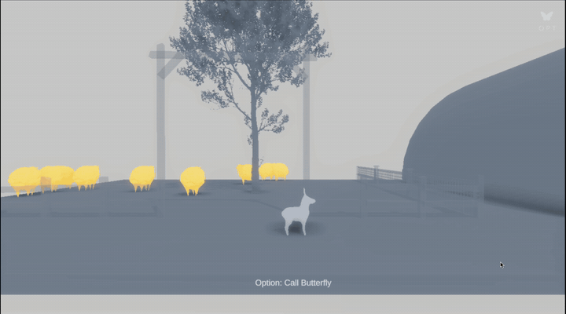
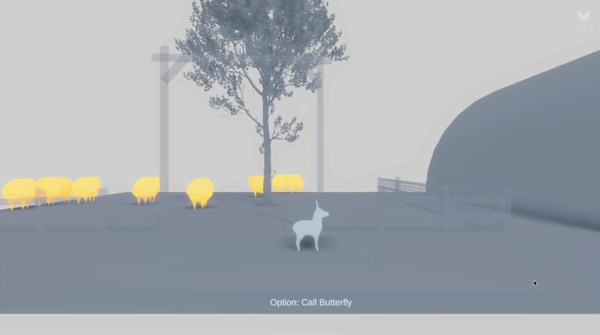
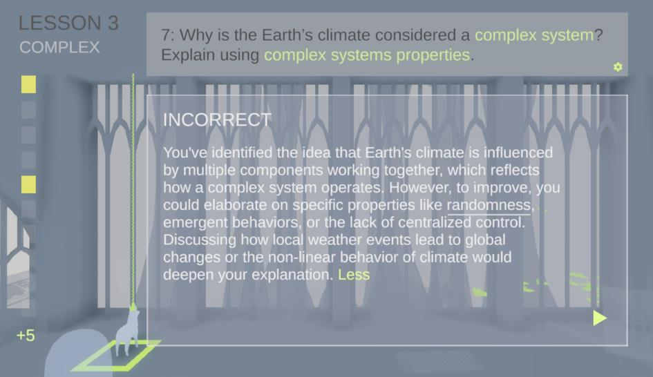

🐑 Basic Lesson
Foundational complex systems concepts around the sheep flock: recognizing emergent flocking patterns and matching agents in the environment to their roles.
SMILE Program · Project
Walk into a flock. Watch a pattern nobody is in charge of.
The Flocking Simulator is an immersive, open-world environment in which learners control a virtual dog to explore animal groups exhibiting collective behavior, such as sheep flocks, duck flocks, and bat swarms, as analogies for emergent processes in complex systems. It combines interactive simulation, an LLM-based tutor, generative learning activities such as making predictions, and metacognitive monitoring through confidence-check reflections.
Learners progress through three lessons of increasing conceptual difficulty, each anchored in a different animal group.
Foundational complex systems concepts around the sheep flock: recognizing emergent flocking patterns and matching agents in the environment to their roles.
The three flocking rules from the Boids model (separation, cohesion, alignment) explored with the duck flock, covering Interactions and Relations.
Advanced ideas about Causality with the bat swarm: net effects vs. chain effects, common misconceptions, and transfer to phenomena like Earth's climate.
Learners can call a dynamic LLM-based Butterfly Tutor (powered by GPT-4o) at any time for adaptive, context-aware support. Its design follows three principles:

Learners arrive to a single framing question, "How do animals move in groups?", shown alongside the movement controls for their dog avatar.

Movement is self-paced and open-ended: learners roam the world and approach animal groups in whatever order they choose.

Learners answer prediction questions and toggle "Show Interactions" to reveal the invisible network of local interactions behind the flock's pattern.

The tutor answers in the language of emergence, describing sheep as "each moving independently yet together, forming a living pattern," and returns a question rather than closing the topic.

Predict the flock's behavior, then test the prediction by tweaking the alignment, cohesion, and separation sliders.

A commitment first: do the ducks stay close together as they swim? The hint names the parameter to investigate, but the learner answers before touching it.

Only then do the sliders appear, letting learners test the Boids rules directly against the prediction they just made.

Learners explore advanced causality concepts with the bat swarm.

Speed is added as a fourth slider alongside alignment, cohesion, and separation.

Learners chat with the LLM-based tutor, which responds with context-aware, PAIR-C-grounded guidance about the emergent behavior around them.

A gentle "Call Butterfly" prompt reminds learners that the tutor is available without demanding interaction.

For open-ended questions, the system generates real-time elaborated feedback on student responses via the OpenAI API.
Amit Nair (Flocking Simulator)
Dr. Man Echo Su (PI, Project Lead)
Dr. Lidia Altamura (Postdoc collaborator)
Amit Nair (Research Assistant)
Prof. Tomohiro Nagashima (Advisor)
Developed through participatory design with a high school biology teacher and a domain expert in complexity science.